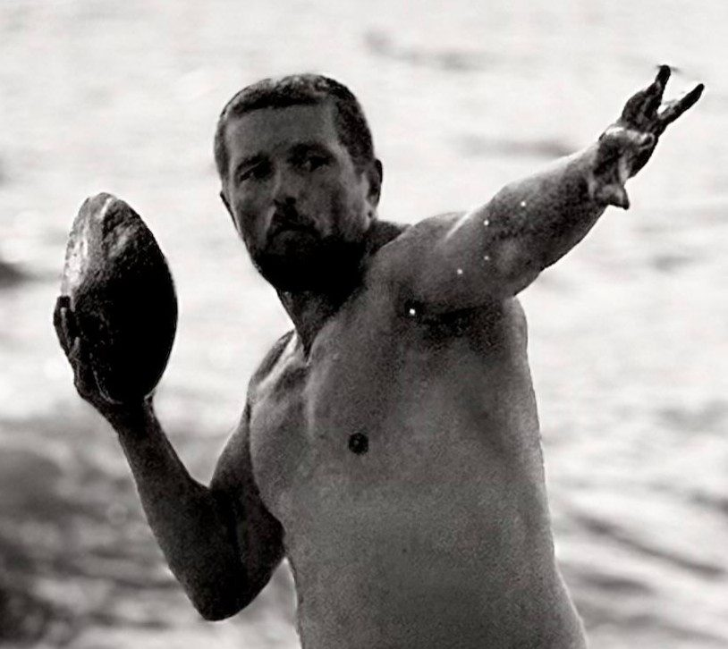
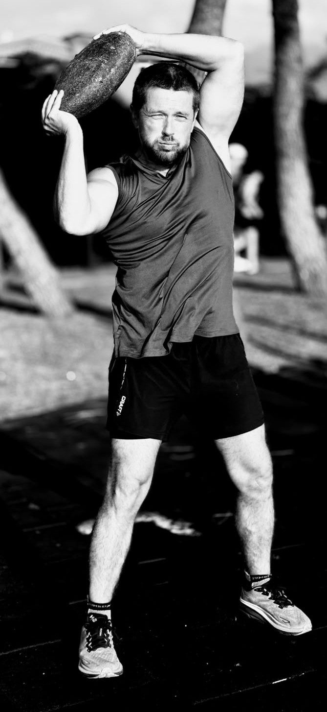

Тело и разум,
перестроенные заново.
Дмитрий Терещенко — бывший спортсмен, экономист и юрист, прошедший путь от полного физического истощения до контрольной паузы дыхания в 90 секунд. Автор системы ВОЛНА — синтеза дыхательных, физических и нейрофизиологических практик для тех, кто решил, что дальше так нельзя.
Никаких чудес.
Только то, что работает.
Семь принципов, на которых построена каждая программа — от первой консультации до закрепления навыка на уровне рефлекса.
От простого к сложному
Динамическое формирование личной программы из лучших техник по авторской методике. Шаг за шагом — создание привычки к новой жизни.
От лёгкого к трудному
Сначала формируем физическую и психоэмоциональную основу, правильные привычки — и только потом развитие супер-силы.
Индивидуальность
Персональный план занятий в зависимости от целей, личного расписания и физических возможностей.
Прозрачность
Понимание своих действий, осознанность процесса тренировки и удовольствие от результата на каждом шаге.
Надёжность
Никаких чудес — только лучшее из более десятка практик, адаптированных автором и подтверждённых опубликованными исследованиями.
Система
Никакого беспорядка — полный комплекс дыхательных, физических и нейрофизических техник, распорядка дня и питания.
Результат
Всегда конкретный и измеримый. Ежедневная оценка физических параметров и коррекция программы под текущие показатели.
ВОЛНА (WAVE).
Почему волна?
Волновая система самосовершенствования человека — синергия наиболее эффективных дыхательных, физических и нейрофизических практик. Она формирует и пожизненно закрепляет навыки эффективного дыхания, физического и психического самовосстановления, ведёт к долговременной пиковой ментальной и физической производительности.
В основе — принцип программы, которая ежедневно мягко проводит человека от утреннего пробуждения с постепенным повышением энергетического и физического уровня до пика производительности в течение дня — и таким же мягким снижением потенциала вечером для уверенного перехода ко сну. Мы не даём стрессу накапливаться, разрушать сон и мешать полноценной жизни.
ВОЛНА (WAVE) — волновая система самосовершенствования человека.
Формирование и пожизненное закрепление навыков эффективного дыхания, физического, нейрофизиологического и психического самовосстановления с последующим развитием — включая техники психоэмоционального самоконтроля и достижение долговременной пиковой ментальной и физической производительности в любой сфере деятельности.
Тело — сложная, саморегулируемая и поддающаяся тренировке система. Ключевое слово — «плавное»: только постепенное внедрение новых практик дыхания, ухода за телом и разумом приживается как вторая кожа и даёт постоянный поток улучшений — час за часом, день за днём, волна за волной.
Утро
- Сон → Пробуждение
- Лёжа в постели
- Сидя в постели
- Стоя
День
- Сидя за столом
- Стоя
- Сидя за столом
Вечер
- Стоя
- Сидя в постели
- Лёжа в постели
- Засыпание → Сон
Каждое упражнение сочетает сразу несколько дыхательных, физических и нейрофизиологических практик одновременно — это резко повышает их эффективность, обеспечивает быструю отдачу от тренировки и выход на новые, более высокие энергетический, физический и психоэмоциональный уровни. При этом упражнения остаются понятными, доступными для самостоятельного выполнения и безопасными для ежедневной практики, а также заметно сокращают время, необходимое для занятий. Последовательность блоков «Утро → День → Вечер» постоянна и обязательна — именно так новые навыки закрепляются на уровне рефлекса.
Четыре стадии перестройки дыхания
Фундамент
Укрепление диафрагмы и дыхательных мышц, развитие гибкости тела, укрепление связок и фундаментальных мышц, выстраивание правильной осанки для максимального снабжения мозга кровью и кислородом.
Адаптация к CO2
Организм приучается к расширенному диапазону давления CO2 — к постоянно повышенному его уровню при одновременно максимальном насыщении крови кислородом.
Новый тип дыхания
Дыхание перестраивается: от поверхностного, частого, преимущественно верхними долями лёгких — к глубокому, медленному, преимущественно диафрагменному типу.
Режим автопилота
Организм учится автоматически купировать всплески стресса и избавляться от их последствий — работая на новом, качественно более высоком уровне без сознательных усилий.
Кто мы, люди?
Химический завод с электростанцией.
Стресс, тревожность, энергия и опустошённость — на самом деле состояние и питание клеток организма. Разберём механику по шагам.
В основе питания клеток лежит митохондриальное дыхание (цикл Кребса, электрон-транспортная цепь). Клетки используют кислород и глюкозу для получения энергии. Когда мозг получает их достаточно — мы чувствуем спокойствие, ясность и способны решать сложные задачи. Если нет — нас ждёт туман в голове, заторможенность и решения, о которых потом жалеем.
Кажется логичным: дышите чаще и глубже — но это не работает. При частом дыхании концентрация CO2 в крови падает, кровь «защелачивается», и кислород перестаёт легко отделяться от гемоглобина. Одновременно организм решает, что кислорода достаточно, и сужает сосуды. Парадокс: чем чаще мы дышим, тем сильнее клетки задыхаются без кислорода.
Решение — дышать медленно и глубоко, задействуя нижние доли лёгких через диафрагму, а не верхние. Нужно увеличивать жизненный объём лёгких и поддерживать повышенный уровень CO2 — именно этот режим со временем формируется у профессиональных спортсменов, фридайверов и практикующих пранаяму йогов. Это то, что делает с организмом практика ВОЛНА.
Практика ВОЛНА в кратчайшие сроки решает проблему недостаточного питания клеток — а значит, устраняет стресс, хроническую усталость, панические состояния и проблемы с концентрацией. В результате программы вырастает жизненный объём лёгких, дыхание становится диафрагменным и глубоким, а зафиксированный уровень CO2 позволяет кислороду свободно питать каждую клетку организма.
Здоровый человек
Дыхание медленное, спокойное, диафрагменного типа. Высокий уровень CO2 при максимальном насыщении O2. Постоянная ясность ума, низкий кортизол, глубокий сон, быстрое восстановление после нагрузок. Автоматически справляется со стрессом, не выходя из состояния концентрации.
Нездоровый человек
Дыхание частое, поверхностное, верхними долями лёгких. Низкий CO2 при низком насыщении O2 — организм в постоянном кислородном голодании. Тревожность, тахикардия, бессонница, хроническая усталость. С трудом восстанавливается, накапливает стресс изо дня в день.
Четыре шага к новому состоянию
Диагностика
Оценка текущих показателей: дыхание, контрольная пауза, физическая форма, образ жизни и цели.
Программа
Персональный протокол ВОЛНА — дыхательные, физические и нейрофизиологические практики под ваш график.
Сопровождение
Ежедневная практика с обратной связью, корректировкой программы под текущие показатели.
Результат
Закрепление навыков на уровне рефлекса — новое качество сна, энергии и концентрации становится нормой.


Мотивация заканчивается.
Система — нет.
Ежедневная практика без исключений — часть личной философии автора. Никакого зала по расписанию и случайных тренировок: только регулярная, осознанная работа с телом и дыханием, встроенная в распорядок дня.
Что говорят те, кто прошёл программу
Раздел готов к наполнению реальными отзывами клиентов — текстом, видео или фото «до/после».
«Место для отзыва клиента. Добавьте историю о том, что изменилось за первые недели работы по системе ВОЛНА.»
«Место для второго отзыва — например, о нормализации сна и снятии тревожности за первый месяц.»
«Место для третьего отзыва — например, о физических изменениях за 6–8 недель полной программы.»
Выберите формат работы
- Полная программа ВОЛНА, 6–8 недель
- Видео-уроки и протоколы упражнений
- Доступ к материалам без ограничения по времени
- Персональная диагностика и протокол
- Личное сопровождение автора
- Ежедневная корректировка программы
- Занятия в малой группе
- Общий график «Утро / День / Вечер»
- Взаимная поддержка участников
FAQ
Контрольная пауза — показатель задержки дыхания после спокойного выдоха, до первого желания вдохнуть. Это простой и точный индикатор насыщения тканей CO2 и качества клеточного дыхания. Чем выше КП — тем лучше организм усваивает кислород.
Да. Принцип «от лёгкого к трудному» и индивидуальный план строятся вокруг вашей текущей формы — от людей с гиподинамией и хронической усталостью до тех, кто хочет выйти на пиковую производительность.
Нет. Упражнения ВОЛНЫ выполняются с собственным весом тела в положениях лёжа, сидя и стоя — дома, на улице, в поездке. Единственное «оборудование» — дисциплина и ежедневный график.
Первый эффект — улучшение сна и настроения, снижение стрессовости дня — заметен уже через 2–3 недели регулярных занятий. Полная перестройка на уровне рефлекса происходит за 6–8 недель.
Программа адаптируется индивидуально с учётом состояния здоровья. При серьёзных хронических заболеваниях перед стартом рекомендуется консультация с лечащим врачом — это обсуждается на этапе диагностики.
ВОЛНА — не отдельная техника, а система: дыхательные, физические и нейрофизиологические практики объединены в единый ежедневный протокол «Утро – День – Вечер», подкреплённый наукой о клеточном дыхании и личным опытом автора.
Готовы начать?
Оставьте заявку — обсудим вашу текущую форму, цели и подберём формат работы.